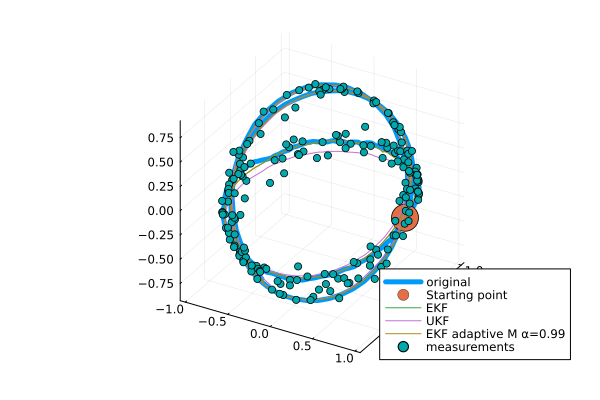

GeometricKalman
Kalman filters on manifolds with an affine connection, unifying the Lie group and Riemannian approaches.

arXiv preprint: https://arxiv.org/abs/2506.01086
Getting started
Basic setting (example: a car driving on a sphere)
using Manifolds
using RecursiveArrayTools
using LinearAlgebra
using Distributions
using GeometricKalman
using GeometricKalman: gen_car_sphere_data, car_sphere_f, car_sphere_h
M = TangentBundle(Manifolds.Sphere(2)) # state manifold
M_obs = Manifolds.Sphere(2) # observation manifold
retraction = Manifolds.FiberBundleProductRetraction()
inverse_retraction = Manifolds.FiberBundleInverseProductRetraction()Manifolds.FiberBundleInverseProductRetraction()Generating data using the gen_car_sphere_data function.
dt = 0.01
vt = 5
times, samples, controls, measurements = gen_car_sphere_data(;
vt = vt,
N = 200,
noise_f_distr = MvNormal(
[0.0, 0.0, 0.0, 0.0],
1e4 * diagm([1e-3, 1e-3, 1e-2, 1e-2]),
),
noise_h_distr = MvNormal([0.0, 0.0], diagm([0.01, 0.01])),
retraction = retraction,
)([0.0, 0.01, 0.02, 0.03, 0.04, 0.05, 0.06, 0.07, 0.08, 0.09 … 1.91, 1.92, 1.93, 1.94, 1.95, 1.96, 1.97, 1.98, 1.99, 2.0], RecursiveArrayTools.ArrayPartition{Float64, Tuple{Vector{Float64}, Vector{Float64}}}[RecursiveArrayTools.ArrayPartition{Float64, Tuple{Vector{Float64}, Vector{Float64}}}(([1.0, 0.0, 0.0], [0.0, 1.0, 0.0])), RecursiveArrayTools.ArrayPartition{Float64, Tuple{Vector{Float64}, Vector{Float64}}}(([0.9979567529893271, 0.06379258654091348, 0.0035812100495993624], [-0.06380628860649643, 0.9983036363792412, -0.002360799750702454])), RecursiveArrayTools.ArrayPartition{Float64, Tuple{Vector{Float64}, Vector{Float64}}}(([0.9949077423199102, 0.10018985887445436, 0.010980730878053324], [-0.10009175036287189, 0.9941264622585078, -0.0017605912468172257])), RecursiveArrayTools.ArrayPartition{Float64, Tuple{Vector{Float64}, Vector{Float64}}}(([0.988780428572333, 0.14790217992085397, 0.02093344804309507], [-0.14741536374619704, 0.9870358655946823, -0.010668554838635663])), RecursiveArrayTools.ArrayPartition{Float64, Tuple{Vector{Float64}, Vector{Float64}}}(([0.9827229777555005, 0.18367989920579927, 0.022742990548943822], [-0.18268688979918313, 0.9787415896002012, -0.010752859674202026])), RecursiveArrayTools.ArrayPartition{Float64, Tuple{Vector{Float64}, Vector{Float64}}}(([0.9722613440999966, 0.23267626683673792, 0.023866998550025824], [-0.23271083305811757, 0.973742569936955, -0.013032166427403876])), RecursiveArrayTools.ArrayPartition{Float64, Tuple{Vector{Float64}, Vector{Float64}}}(([0.9485003904806024, 0.3160997473081182, 0.02068717017594585], [-0.31595544782011703, 0.948920921698169, -0.01304179982223681])), RecursiveArrayTools.ArrayPartition{Float64, Tuple{Vector{Float64}, Vector{Float64}}}(([0.9292173154893674, 0.3683706079843219, 0.02929634393562311], [-0.3677841853353239, 0.9286695897540579, -0.011712997986149293])), RecursiveArrayTools.ArrayPartition{Float64, Tuple{Vector{Float64}, Vector{Float64}}}(([0.9043799508241047, 0.4259681094175416, 0.025457303601030275], [-0.4265127163143363, 0.9059680785509492, -0.0072262251202609845])), RecursiveArrayTools.ArrayPartition{Float64, Tuple{Vector{Float64}, Vector{Float64}}}(([0.881961232255606, 0.46964508482439804, 0.039722526335276905], [-0.47213881005316055, 0.8870276830957422, -0.004533064120553104])) … RecursiveArrayTools.ArrayPartition{Float64, Tuple{Vector{Float64}, Vector{Float64}}}(([-0.8963423842632721, 0.21259135754962838, 0.3890697172338633], [-1.538793800385949, -1.5012325240890068, -2.724799686726879])), RecursiveArrayTools.ArrayPartition{Float64, Tuple{Vector{Float64}, Vector{Float64}}}(([-0.955018625220474, 0.15454447462795942, 0.2530917439269077], [-1.0392566900007247, -1.603222068246805, -2.942570830368923])), RecursiveArrayTools.ArrayPartition{Float64, Tuple{Vector{Float64}, Vector{Float64}}}(([-0.9931821891885338, 0.05421191848659791, 0.10319983998375928], [-0.41335375563092713, -1.6709266259212716, -3.100309554119927])), RecursiveArrayTools.ArrayPartition{Float64, Tuple{Vector{Float64}, Vector{Float64}}}(([-0.9989325752697972, -0.03344576648653241, -0.0318604891515976], [0.15682335059761549, -1.6729040338298862, -3.1607925203499945])), RecursiveArrayTools.ArrayPartition{Float64, Tuple{Vector{Float64}, Vector{Float64}}}(([-0.9742545028897479, -0.11133758051232864, -0.19604108437955203], [0.8126225042640292, -1.6176600428609484, -3.119727584658055])), RecursiveArrayTools.ArrayPartition{Float64, Tuple{Vector{Float64}, Vector{Float64}}}(([-0.9208004071873436, -0.1726139145542142, -0.3497585547572677], [1.418752666371534, -1.5255223154955704, -2.9822334295709307])), RecursiveArrayTools.ArrayPartition{Float64, Tuple{Vector{Float64}, Vector{Float64}}}(([-0.8406404206933639, -0.24451244779235998, -0.4832570185430033], [1.9903530982055198, -1.3903524813565995, -2.758806858745098])), RecursiveArrayTools.ArrayPartition{Float64, Tuple{Vector{Float64}, Vector{Float64}}}(([-0.7228699677313775, -0.31478935191564605, -0.6151151710635698], [2.5637918350000595, -1.1886217811617743, -2.4046271502525896])), RecursiveArrayTools.ArrayPartition{Float64, Tuple{Vector{Float64}, Vector{Float64}}}(([-0.5836761783413735, -0.3722215691820646, -0.7216461891207148], [3.0430076495864906, -0.9485390806875256, -1.971969632742201])), RecursiveArrayTools.ArrayPartition{Float64, Tuple{Vector{Float64}, Vector{Float64}}}(([-0.4292699609021262, -0.4277158044059139, -0.7954787811931182], [3.4156510578199537, -0.6761596102487792, -1.4796525969881074]))], Any[0.0, 0.004999979166692708, 0.009999833334166664, 0.01499943750632809, 0.01999866669333308, 0.024997395914712332, 0.02999550020249566, 0.034992854604336196, 0.03998933418663416, 0.044984814037660234 … 0.8163137404456835, 0.8191915683009983, 0.8220489164097717, 0.8248857133384501, 0.8277018881672576, 0.8304973704919705, 0.8332720904256761, 0.8360259786005205, 0.838758966169443, 0.8414709848078965], [[0.9978870453799792, 0.018190196059059263, 0.06237436516829991], [0.99823816639938, -0.0035666915854513925, -0.05922703651828152], [0.9478463548882528, 0.09679719953815742, 0.30367349190639364], [0.994225556492555, 0.07960225343030504, -0.0719654366059636], [0.8779402750508126, 0.45011684337386104, 0.1631431909546165], [0.941188819576661, 0.3035804728896901, 0.14833240503667253], [0.9246868980687343, 0.3712921059019046, 0.0842396144040985], [0.9064533918219664, 0.42193282958895223, 0.0177464297680625], [0.8626982536742085, 0.49409161275932484, 0.1078202268053642], [0.84314120123121, 0.5082161103084897, 0.17558274405334098] … [-0.9668131310358794, 0.1791626104680331, 0.1821349188565412], [-0.9846070053897468, 0.05338656034766531, 0.16642992552927463], [-0.9728379653705752, -0.08115479224415975, 0.21679527861428755], [-0.9737149083553511, -0.054297868908552996, -0.22120356841271677], [-0.9038856053061991, -0.05968829111216718, -0.42358956600033826], [-0.9089633615375415, -0.2103851869914123, -0.35989398505248865], [-0.8149647806638691, -0.3183701927292031, -0.48422394267431873], [-0.7352026246243554, -0.26983784722639387, -0.6218236381400152], [-0.5837785872533088, -0.37018364629273126, -0.7226109804604056], [-0.5162994318641618, -0.31625790138288695, -0.7958742592078447]])Setting initial conditions for filters
p0 = ArrayPartition([1.0, 0.0, 0.0], [0.0, 1.0, 0.0])
P0 = diagm([0.1, 0.1, 0.1, 0.1])
Q = diagm([0.1, 0.1, 0.01, 0.01])
R = diagm([0.01, 0.01])2×2 Matrix{Float64}:
0.01 0.0
0.0 0.01Adapting system dynamics to the interface expected by Kalman filters.
car_f_adapted(p, q, noise, t::Real) = car_sphere_f(p, q, noise, t::Real; vt = vt)
f_tilde = GeometricKalman.default_discretization(
M,
car_f_adapted;
dt = dt,
retraction = retraction,
)(::GeometricKalman.var"#tilde_f#27"{Float64, Manifolds.FiberBundleProductRetraction, FiberBundle{ℝ, TangentSpaceType, Sphere{ManifoldsBase.TypeParameter{Tuple{2}}, ℝ}, Manifolds.FiberBundleProductVectorTransport{ParallelTransport, ParallelTransport}}, typeof(Main.car_f_adapted)}) (generic function with 1 method)Filter-specific settings
sp = WanMerweSigmaPoints(; α = 1.0)
filter_params = [
( # extended Kalman filter
"EKF",
(;
propagator = EKFPropagator(M, f_tilde; B_M = DefaultOrthonormalBasis()),
updater = EKFUpdater(
M,
M_obs,
car_sphere_h;
B_M = DefaultOrthonormalBasis(),
B_M_obs = DefaultOrthonormalBasis(),
),
),
),
( # unscented Kalman filter
"UKF",
(;
propagator = UnscentedPropagator(
M;
sigma_points = sp,
inverse_retraction_method = inverse_retraction,
),
updater = UnscentedUpdater(; sigma_points = sp),
),
),
( # adaptive extended Kalman filter
"EKF adaptive M α=0.99",
(;
propagator = EKFPropagator(M, f_tilde; B_M = DefaultOrthonormalBasis()),
updater = EKFUpdater(
M,
M_obs,
car_sphere_h;
B_M = DefaultOrthonormalBasis(),
B_M_obs = DefaultOrthonormalBasis(),
),
measurement_covariance_adapter = CovarianceMatchingMeasurementCovarianceAdapter(
0.99,
),
),
),
]3-element Vector{Tuple{String, NamedTuple}}:
("EKF", (propagator = EKFPropagator{GeometricKalman.var"#jacobian_p#3"{DefaultOrthonormalBasis{ℝ, TangentSpaceType}, DefaultOrthonormalBasis{ℝ, TangentSpaceType}, Manifolds.FiberBundleProductRetraction, Manifolds.FiberBundleInverseProductRetraction, FiberBundle{ℝ, TangentSpaceType, Sphere{ManifoldsBase.TypeParameter{Tuple{2}}, ℝ}, Manifolds.FiberBundleProductVectorTransport{ParallelTransport, ParallelTransport}}, FiberBundle{ℝ, TangentSpaceType, Sphere{ManifoldsBase.TypeParameter{Tuple{2}}, ℝ}, Manifolds.FiberBundleProductVectorTransport{ParallelTransport, ParallelTransport}}, GeometricKalman.var"#tilde_f#27"{Float64, Manifolds.FiberBundleProductRetraction, FiberBundle{ℝ, TangentSpaceType, Sphere{ManifoldsBase.TypeParameter{Tuple{2}}, ℝ}, Manifolds.FiberBundleProductVectorTransport{ParallelTransport, ParallelTransport}}, typeof(Main.car_f_adapted)}}}(GeometricKalman.var"#jacobian_p#3"{DefaultOrthonormalBasis{ℝ, TangentSpaceType}, DefaultOrthonormalBasis{ℝ, TangentSpaceType}, Manifolds.FiberBundleProductRetraction, Manifolds.FiberBundleInverseProductRetraction, FiberBundle{ℝ, TangentSpaceType, Sphere{ManifoldsBase.TypeParameter{Tuple{2}}, ℝ}, Manifolds.FiberBundleProductVectorTransport{ParallelTransport, ParallelTransport}}, FiberBundle{ℝ, TangentSpaceType, Sphere{ManifoldsBase.TypeParameter{Tuple{2}}, ℝ}, Manifolds.FiberBundleProductVectorTransport{ParallelTransport, ParallelTransport}}, GeometricKalman.var"#tilde_f#27"{Float64, Manifolds.FiberBundleProductRetraction, FiberBundle{ℝ, TangentSpaceType, Sphere{ManifoldsBase.TypeParameter{Tuple{2}}, ℝ}, Manifolds.FiberBundleProductVectorTransport{ParallelTransport, ParallelTransport}}, typeof(Main.car_f_adapted)}}(DefaultOrthonormalBasis(ℝ), DefaultOrthonormalBasis(ℝ), Manifolds.FiberBundleProductRetraction(), Manifolds.FiberBundleInverseProductRetraction(), TangentBundle(Sphere(2, ℝ)), TangentBundle(Sphere(2, ℝ)), GeometricKalman.var"#tilde_f#27"{Float64, Manifolds.FiberBundleProductRetraction, FiberBundle{ℝ, TangentSpaceType, Sphere{ManifoldsBase.TypeParameter{Tuple{2}}, ℝ}, Manifolds.FiberBundleProductVectorTransport{ParallelTransport, ParallelTransport}}, typeof(Main.car_f_adapted)}(0.01, Manifolds.FiberBundleProductRetraction(), TangentBundle(Sphere(2, ℝ)), Main.car_f_adapted))), updater = EKFUpdater{GeometricKalman.var"#jacobian_p#3"{DefaultOrthonormalBasis{ℝ, TangentSpaceType}, DefaultOrthonormalBasis{ℝ, TangentSpaceType}, Manifolds.FiberBundleProductRetraction, LogarithmicInverseRetraction, FiberBundle{ℝ, TangentSpaceType, Sphere{ManifoldsBase.TypeParameter{Tuple{2}}, ℝ}, Manifolds.FiberBundleProductVectorTransport{ParallelTransport, ParallelTransport}}, Sphere{ManifoldsBase.TypeParameter{Tuple{2}}, ℝ}, typeof(GeometricKalman.car_sphere_h)}}(GeometricKalman.var"#jacobian_p#3"{DefaultOrthonormalBasis{ℝ, TangentSpaceType}, DefaultOrthonormalBasis{ℝ, TangentSpaceType}, Manifolds.FiberBundleProductRetraction, LogarithmicInverseRetraction, FiberBundle{ℝ, TangentSpaceType, Sphere{ManifoldsBase.TypeParameter{Tuple{2}}, ℝ}, Manifolds.FiberBundleProductVectorTransport{ParallelTransport, ParallelTransport}}, Sphere{ManifoldsBase.TypeParameter{Tuple{2}}, ℝ}, typeof(GeometricKalman.car_sphere_h)}(DefaultOrthonormalBasis(ℝ), DefaultOrthonormalBasis(ℝ), Manifolds.FiberBundleProductRetraction(), LogarithmicInverseRetraction(), TangentBundle(Sphere(2, ℝ)), Sphere(2, ℝ), GeometricKalman.car_sphere_h))))
("UKF", (propagator = UnscentedPropagator{WanMerweSigmaPoints{Float64}, Manifolds.FiberBundleInverseProductRetraction, GradientDescentEstimation}(WanMerweSigmaPoints{Float64}(1.0, 2.0, 0.0), Manifolds.FiberBundleInverseProductRetraction(), GradientDescentEstimation()), updater = UnscentedUpdater{WanMerweSigmaPoints{Float64}, LogarithmicInverseRetraction}(WanMerweSigmaPoints{Float64}(1.0, 2.0, 0.0), LogarithmicInverseRetraction())))
("EKF adaptive M α=0.99", (propagator = EKFPropagator{GeometricKalman.var"#jacobian_p#3"{DefaultOrthonormalBasis{ℝ, TangentSpaceType}, DefaultOrthonormalBasis{ℝ, TangentSpaceType}, Manifolds.FiberBundleProductRetraction, Manifolds.FiberBundleInverseProductRetraction, FiberBundle{ℝ, TangentSpaceType, Sphere{ManifoldsBase.TypeParameter{Tuple{2}}, ℝ}, Manifolds.FiberBundleProductVectorTransport{ParallelTransport, ParallelTransport}}, FiberBundle{ℝ, TangentSpaceType, Sphere{ManifoldsBase.TypeParameter{Tuple{2}}, ℝ}, Manifolds.FiberBundleProductVectorTransport{ParallelTransport, ParallelTransport}}, GeometricKalman.var"#tilde_f#27"{Float64, Manifolds.FiberBundleProductRetraction, FiberBundle{ℝ, TangentSpaceType, Sphere{ManifoldsBase.TypeParameter{Tuple{2}}, ℝ}, Manifolds.FiberBundleProductVectorTransport{ParallelTransport, ParallelTransport}}, typeof(Main.car_f_adapted)}}}(GeometricKalman.var"#jacobian_p#3"{DefaultOrthonormalBasis{ℝ, TangentSpaceType}, DefaultOrthonormalBasis{ℝ, TangentSpaceType}, Manifolds.FiberBundleProductRetraction, Manifolds.FiberBundleInverseProductRetraction, FiberBundle{ℝ, TangentSpaceType, Sphere{ManifoldsBase.TypeParameter{Tuple{2}}, ℝ}, Manifolds.FiberBundleProductVectorTransport{ParallelTransport, ParallelTransport}}, FiberBundle{ℝ, TangentSpaceType, Sphere{ManifoldsBase.TypeParameter{Tuple{2}}, ℝ}, Manifolds.FiberBundleProductVectorTransport{ParallelTransport, ParallelTransport}}, GeometricKalman.var"#tilde_f#27"{Float64, Manifolds.FiberBundleProductRetraction, FiberBundle{ℝ, TangentSpaceType, Sphere{ManifoldsBase.TypeParameter{Tuple{2}}, ℝ}, Manifolds.FiberBundleProductVectorTransport{ParallelTransport, ParallelTransport}}, typeof(Main.car_f_adapted)}}(DefaultOrthonormalBasis(ℝ), DefaultOrthonormalBasis(ℝ), Manifolds.FiberBundleProductRetraction(), Manifolds.FiberBundleInverseProductRetraction(), TangentBundle(Sphere(2, ℝ)), TangentBundle(Sphere(2, ℝ)), GeometricKalman.var"#tilde_f#27"{Float64, Manifolds.FiberBundleProductRetraction, FiberBundle{ℝ, TangentSpaceType, Sphere{ManifoldsBase.TypeParameter{Tuple{2}}, ℝ}, Manifolds.FiberBundleProductVectorTransport{ParallelTransport, ParallelTransport}}, typeof(Main.car_f_adapted)}(0.01, Manifolds.FiberBundleProductRetraction(), TangentBundle(Sphere(2, ℝ)), Main.car_f_adapted))), updater = EKFUpdater{GeometricKalman.var"#jacobian_p#3"{DefaultOrthonormalBasis{ℝ, TangentSpaceType}, DefaultOrthonormalBasis{ℝ, TangentSpaceType}, Manifolds.FiberBundleProductRetraction, LogarithmicInverseRetraction, FiberBundle{ℝ, TangentSpaceType, Sphere{ManifoldsBase.TypeParameter{Tuple{2}}, ℝ}, Manifolds.FiberBundleProductVectorTransport{ParallelTransport, ParallelTransport}}, Sphere{ManifoldsBase.TypeParameter{Tuple{2}}, ℝ}, typeof(GeometricKalman.car_sphere_h)}}(GeometricKalman.var"#jacobian_p#3"{DefaultOrthonormalBasis{ℝ, TangentSpaceType}, DefaultOrthonormalBasis{ℝ, TangentSpaceType}, Manifolds.FiberBundleProductRetraction, LogarithmicInverseRetraction, FiberBundle{ℝ, TangentSpaceType, Sphere{ManifoldsBase.TypeParameter{Tuple{2}}, ℝ}, Manifolds.FiberBundleProductVectorTransport{ParallelTransport, ParallelTransport}}, Sphere{ManifoldsBase.TypeParameter{Tuple{2}}, ℝ}, typeof(GeometricKalman.car_sphere_h)}(DefaultOrthonormalBasis(ℝ), DefaultOrthonormalBasis(ℝ), Manifolds.FiberBundleProductRetraction(), LogarithmicInverseRetraction(), TangentBundle(Sphere(2, ℝ)), Sphere(2, ℝ), GeometricKalman.car_sphere_h)), measurement_covariance_adapter = CovarianceMatchingMeasurementCovarianceAdapter{Float64}(0.99)))Running the filters. Results will be saved in reconstructions.
reconstructions = NamedTuple[]
for (name, filter_kwargs) in filter_params
kf = discrete_kalman_filter_manifold(
M,
M_obs,
p0,
f_tilde,
car_sphere_h,
P0,
copy(Q),
copy(R);
filter_kwargs...,
)
samples_kalman = []
for i in eachindex(samples)
GeometricKalman.update!(kf, controls[i], measurements[i])
push!(samples_kalman, kf.p_n)
predict!(kf, controls[i])
end
push!(reconstructions, (; data = samples_kalman, label = name))
end┌ Warning: SpecialOrthogonal will move to LieGroups.jl and be renamed to SpecialOrthogonalGroup.
│ caller = ip:0x0
└ @ Core :-1Plotting the estimated trajectory and measurements.
using Plots
function trajectory_plot3d(
p0,
samples::Vector,
reconstructions::Vector{<:NamedTuple},
measurements::Vector,
)
fig = plot(
[s.x[1][1] for s in samples],
[s.x[1][2] for s in samples],
[s.x[1][3] for s in samples];
label = "original",
linewidth = 5.0,
)
scatter3d!(map(v -> [v], p0.x[1])..., markersize = 15, label = "Starting point")
for rec in reconstructions
plot!(
[s.x[1][1] for s in rec.data],
[s.x[1][2] for s in rec.data],
[s.x[1][3] for s in rec.data];
label = rec.label,
)
end
scatter!(
[s[1] for s in measurements],
[s[2] for s in measurements],
[s[3] for s in measurements];
label = "measurements",
)
return fig
end
trajectory_plot3d(p0, samples, reconstructions, measurements)